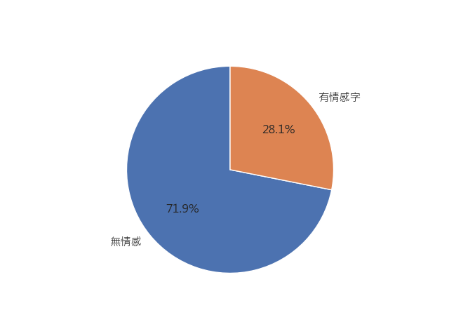
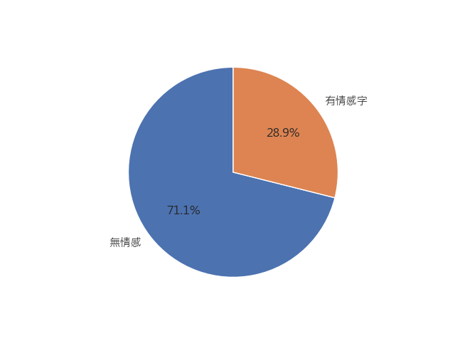
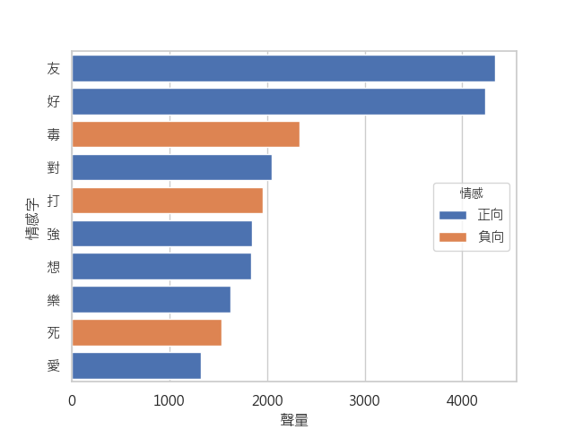
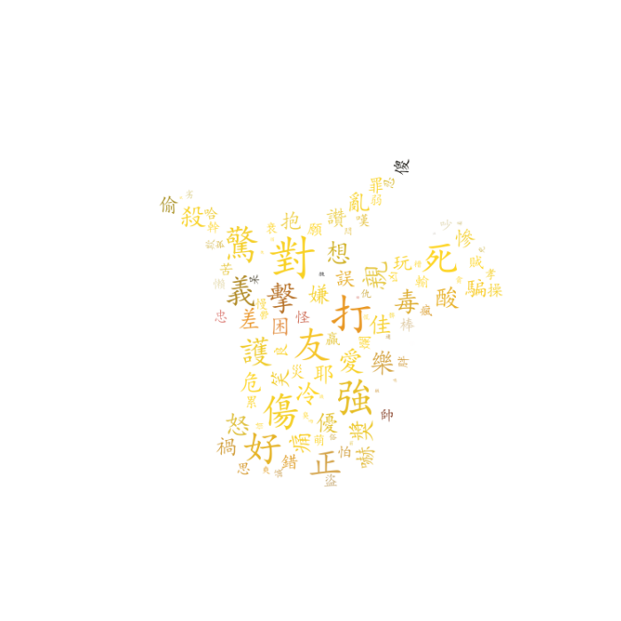
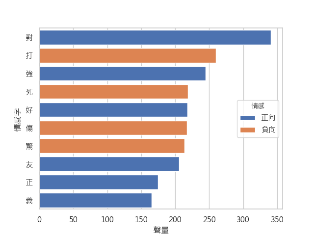
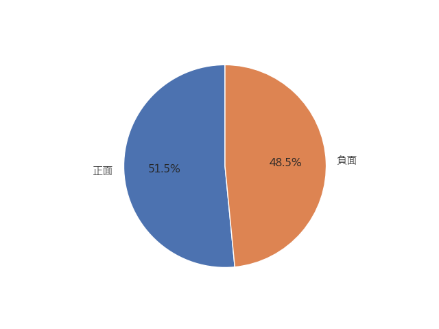
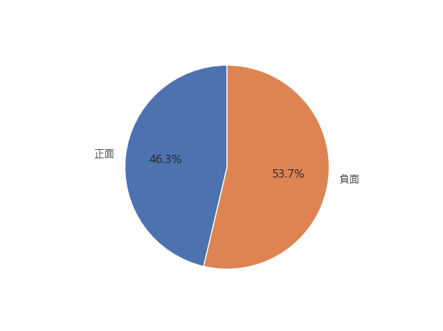

Sense Analysis
情感，是文章中很重要的一部分，所以我們特別針對情感面去分析。我們想藉由情感詞庫，去計算兩個資料集的情感的正負面傾向，
這邊我們使用 ntu 還有元智大學的情感詞庫做為依據，分別對兩個資料集分析。

中國情感文字分析派圖

臺灣情感文字分析派圖
Word & Rank
中國情感文字雲和文字排行


臺灣情感文字雲和文字排行

可以發現， 中國的假新聞有10 個裡有 7 個是正面字，而台灣是10 個裡有6個，可以知道新聞其實普遍都是偏向正面的。其中「打」、「強」、「死」、「好」、「友」、「對」 這六個字，是兩者共通的情感字都是單個字，可以知道其實，就新聞標題來說，新聞媒體會藉由一些單個的情感字詞去加強新聞的力道。
Positive & Negative

中國情感正負比例

臺灣情感正負比例
以比例來看，藍色為正面，橘色為負面，可以很直接的看到，中國的假新聞以正面詞彙偏多，
而台灣的新聞則以負面情緒偏多。